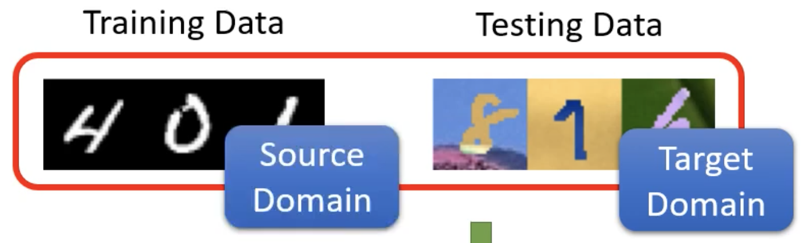
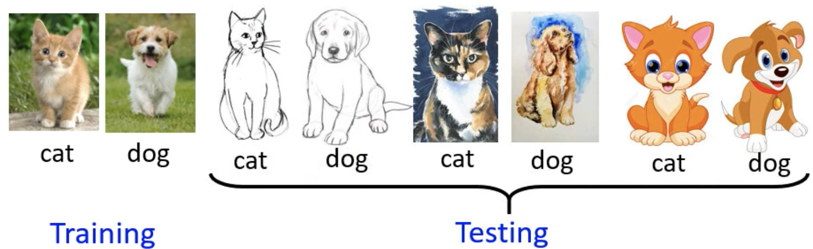

<!DOCTYPE html>
<html lang="zh-CN">
<head>
  <meta charset="UTF-8">
<meta name="viewport" content="width=device-width, initial-scale=1, maximum-scale=2">
<meta name="theme-color" content="#222">
<meta name="generator" content="Hexo 5.4.0">


  <link rel="apple-touch-icon" sizes="180x180" href="/images/apple-touch-icon-next.png">
  <link rel="icon" type="image/png" sizes="32x32" href="/images/favicon-32x32-next.png">
  <link rel="icon" type="image/png" sizes="16x16" href="/images/favicon-16x16-next.png">
  <link rel="mask-icon" href="/images/logo.svg" color="#222">

<link rel="stylesheet" href="/css/main.css">


<link rel="stylesheet" href="https://cdn.jsdelivr.net/npm/@fortawesome/fontawesome-free@5.15.3/css/all.min.css">
  <link rel="stylesheet" href="https://cdn.jsdelivr.net/npm/animate.css@3.1.1/animate.min.css">

<script class="next-config" data-name="main" type="application/json">{&quot;hostname&quot;:&quot;ly1998117.github.io&quot;,&quot;root&quot;:&quot;&#x2F;&quot;,&quot;images&quot;:&quot;&#x2F;images&quot;,&quot;scheme&quot;:&quot;Gemini&quot;,&quot;version&quot;:&quot;8.4.0&quot;,&quot;exturl&quot;:false,&quot;sidebar&quot;:{&quot;position&quot;:&quot;left&quot;,&quot;display&quot;:&quot;post&quot;,&quot;padding&quot;:18,&quot;offset&quot;:12},&quot;copycode&quot;:true,&quot;bookmark&quot;:{&quot;enable&quot;:false,&quot;color&quot;:&quot;#222&quot;,&quot;save&quot;:&quot;auto&quot;},&quot;fancybox&quot;:false,&quot;mediumzoom&quot;:false,&quot;lazyload&quot;:false,&quot;pangu&quot;:false,&quot;comments&quot;:{&quot;style&quot;:&quot;tabs&quot;,&quot;active&quot;:null,&quot;storage&quot;:true,&quot;lazyload&quot;:false,&quot;nav&quot;:null},&quot;motion&quot;:{&quot;enable&quot;:true,&quot;async&quot;:true,&quot;transition&quot;:{&quot;post_block&quot;:&quot;fadeIn&quot;,&quot;post_header&quot;:&quot;fadeInDown&quot;,&quot;post_body&quot;:&quot;fadeInDown&quot;,&quot;coll_header&quot;:&quot;fadeInLeft&quot;,&quot;sidebar&quot;:&quot;fadeInUp&quot;}},&quot;prism&quot;:false,&quot;i18n&quot;:{&quot;placeholder&quot;:&quot;搜索...&quot;,&quot;empty&quot;:&quot;没有找到任何搜索结果：${query}&quot;,&quot;hits_time&quot;:&quot;找到 ${hits} 个搜索结果（用时 ${time} 毫秒）&quot;,&quot;hits&quot;:&quot;找到 ${hits} 个搜索结果&quot;},&quot;path&quot;:&quot;&#x2F;search.xml&quot;,&quot;localsearch&quot;:{&quot;enable&quot;:true,&quot;trigger&quot;:&quot;auto&quot;,&quot;top_n_per_article&quot;:1,&quot;unescape&quot;:false,&quot;preload&quot;:false}}</script>
<meta name="description" content="Domain Adaption">
<meta property="og:type" content="article">
<meta property="og:title" content="机器学习 by 李宏毅(11)">
<meta property="og:url" content="https://ly1998117.github.io/2021/08/13/ML11/index.html">
<meta property="og:site_name" content="LiuYang&#39;s Blog">
<meta property="og:description" content="Domain Adaption">
<meta property="og:locale" content="zh_CN">
<meta property="og:image" content="https://ly1998117.github.io/2021/08/13/ML11/1.png">
<meta property="og:image" content="https://ly1998117.github.io/2021/08/13/ML11/2.png">
<meta property="og:image" content="https://ly1998117.github.io/2021/08/13/ML11/3.png">
<meta property="og:image" content="https://ly1998117.github.io/2021/08/13/ML11/4.png">
<meta property="og:image" content="https://ly1998117.github.io/2021/08/13/ML11/5.png">
<meta property="og:image" content="https://ly1998117.github.io/2021/08/13/ML11/6.png">
<meta property="og:image" content="https://ly1998117.github.io/2021/08/13/ML11/7.png">
<meta property="og:image" content="https://ly1998117.github.io/2021/08/13/ML11/8.png">
<meta property="og:image" content="https://ly1998117.github.io/2021/08/13/ML11/9.png">
<meta property="og:image" content="https://ly1998117.github.io/2021/08/13/ML11/10.png">
<meta property="og:image" content="https://ly1998117.github.io/2021/08/13/ML11/11.png">
<meta property="og:image" content="https://ly1998117.github.io/2021/08/13/ML11/12.png">
<meta property="article:published_time" content="2021-08-13T09:25:15.000Z">
<meta property="article:modified_time" content="2021-08-23T14:42:03.009Z">
<meta property="article:author" content="LiuYang">
<meta property="article:tag" content="机器学习">
<meta name="twitter:card" content="summary">
<meta name="twitter:image" content="https://ly1998117.github.io/2021/08/13/ML11/1.png">


<link rel="canonical" href="https://ly1998117.github.io/2021/08/13/ML11/">


<script class="next-config" data-name="page" type="application/json">{&quot;sidebar&quot;:&quot;&quot;,&quot;isHome&quot;:false,&quot;isPost&quot;:true,&quot;lang&quot;:&quot;zh-CN&quot;,&quot;comments&quot;:true,&quot;permalink&quot;:&quot;https:&#x2F;&#x2F;ly1998117.github.io&#x2F;2021&#x2F;08&#x2F;13&#x2F;ML11&#x2F;&quot;,&quot;path&quot;:&quot;2021&#x2F;08&#x2F;13&#x2F;ML11&#x2F;&quot;,&quot;title&quot;:&quot;机器学习 by 李宏毅(11)&quot;}</script>

<script class="next-config" data-name="calendar" type="application/json">&quot;&quot;</script>
<title>机器学习 by 李宏毅(11) | LiuYang's Blog</title><script src="/js/config.js"></script>
  


  <noscript>
    <link rel="stylesheet" href="/css/noscript.css">
  </noscript>
</head>

<body itemscope itemtype="http://schema.org/WebPage" class="use-motion">
  <div class="headband"></div>

  <main class="main">
    <header class="header" itemscope itemtype="http://schema.org/WPHeader">
      <div class="header-inner"><div class="site-brand-container">
  <div class="site-nav-toggle">
    <div class="toggle" aria-label="切换导航栏" role="button">
        <span class="toggle-line"></span>
        <span class="toggle-line"></span>
        <span class="toggle-line"></span>
    </div>
  </div>

  <div class="site-meta">

    <a href="/" class="brand" rel="start">
      <i class="logo-line"></i>
      <h1 class="site-title">LiuYang's Blog</h1>
      <i class="logo-line"></i>
    </a>
  </div>

  <div class="site-nav-right">
    <div class="toggle popup-trigger">
        <i class="fa fa-search fa-fw fa-lg"></i>
    </div>
  </div>
</div>


<nav class="site-nav">
  <ul class="main-menu menu">
        <li class="menu-item menu-item-home"><a href="/" rel="section"><i class="fa fa-home fa-fw"></i>首页</a></li>
        <li class="menu-item menu-item-about"><a href="/about/" rel="section"><i class="fa fa-user fa-fw"></i>关于</a></li>
        <li class="menu-item menu-item-tags"><a href="/tags/" rel="section"><i class="fa fa-tags fa-fw"></i>标签<span class="badge">27</span></a></li>
        <li class="menu-item menu-item-categories"><a href="/categories/" rel="section"><i class="fa fa-th fa-fw"></i>分类<span class="badge">13</span></a></li>
      <li class="menu-item menu-item-search">
        <a role="button" class="popup-trigger"><i class="fa fa-search fa-fw"></i>搜索
        </a>
      </li>
  </ul>
</nav>


  <div class="search-pop-overlay">
    <div class="popup search-popup"><div class="search-header">
  <span class="search-icon">
    <i class="fa fa-search"></i>
  </span>
  <div class="search-input-container">
    <input autocomplete="off" autocapitalize="off" maxlength="80"
           placeholder="搜索..." spellcheck="false"
           type="search" class="search-input">
  </div>
  <span class="popup-btn-close" role="button">
    <i class="fa fa-times-circle"></i>
  </span>
</div>
<div class="search-result-container no-result">
  <div class="search-result-icon">
    <i class="fa fa-spinner fa-pulse fa-5x"></i>
  </div>
</div>

    </div>
  </div>

</div>
        
  
  <div class="toggle sidebar-toggle" role="button">
    <span class="toggle-line"></span>
    <span class="toggle-line"></span>
    <span class="toggle-line"></span>
  </div>

  <aside class="sidebar">

    <div class="sidebar-inner sidebar-nav-active sidebar-toc-active">
      <ul class="sidebar-nav">
        <li class="sidebar-nav-toc">
          文章目录
        </li>
        <li class="sidebar-nav-overview">
          站点概览
        </li>
      </ul>

      <div class="sidebar-panel-container">
        <!--noindex-->
        <div class="post-toc-wrap sidebar-panel">
            <div class="post-toc animated"><ol class="nav"><li class="nav-item nav-level-2"><a class="nav-link" href="#domain-adaption"><span class="nav-number">1.</span> <span class="nav-text">Domain Adaption</span></a><ol class="nav-child"><li class="nav-item nav-level-3"><a class="nav-link" href="#domain-shift"><span class="nav-number">1.1.</span> <span class="nav-text">Domain Shift</span></a></li><li class="nav-item nav-level-3"><a class="nav-link" href="#domain-adaptation"><span class="nav-number">1.2.</span> <span class="nav-text">Domain Adaptation</span></a></li><li class="nav-item nav-level-3"><a class="nav-link" href="#domain-adversarial-training"><span class="nav-number">1.3.</span> <span class="nav-text">Domain Adversarial Training</span></a></li><li class="nav-item nav-level-3"><a class="nav-link" href="#domain-generalization"><span class="nav-number">1.4.</span> <span class="nav-text">Domain Generalization</span></a></li></ol></li></ol></div>
        </div>
        <!--/noindex-->

        <div class="site-overview-wrap sidebar-panel">
          <div class="site-author site-overview-item animated" itemprop="author" itemscope itemtype="http://schema.org/Person">
    
  <p class="site-author-name" itemprop="name">LiuYang</p>
  <div class="site-description" itemprop="description">人与人的悲欢并不相通</div>
</div>
<div class="site-state-wrap site-overview-item animated">
  <nav class="site-state">
      <div class="site-state-item site-state-posts">
          <a href="/archives">
          <span class="site-state-item-count">67</span>
          <span class="site-state-item-name">日志</span>
        </a>
      </div>
      <div class="site-state-item site-state-categories">
            <a href="/categories/">
          
        <span class="site-state-item-count">13</span>
        <span class="site-state-item-name">分类</span></a>
      </div>
      <div class="site-state-item site-state-tags">
            <a href="/tags/">
          
        <span class="site-state-item-count">27</span>
        <span class="site-state-item-name">标签</span></a>
      </div>
  </nav>
</div>


  <div class="links-of-blogroll site-overview-item animated">
    <div class="links-of-blogroll-title"><i class="fa fa-globe fa-fw"></i>
      Links
    </div>
    <ul class="links-of-blogroll-list">
        <li class="links-of-blogroll-item">
          <a href="https://www.macwk.com/" title="https:www.macwk.com&#x2F;" rel="noopener" target="_blank">Macwk</a>
        </li>
    </ul>
  </div>

        </div>
      </div>
        <div class="back-to-top animated" role="button" aria-label="返回顶部">
          <i class="fa fa-arrow-up"></i>
          <span>0%</span>
        </div>
    </div>
  </aside>
  <div class="sidebar-dimmer"></div>


    </header>

    

<noscript>
  <div class="noscript-warning">Theme NexT works best with JavaScript enabled</div>
</noscript>


    <div class="main-inner post posts-expand">


  


<div class="post-block">
  
  

  <article itemscope itemtype="http://schema.org/Article" class="post-content" lang="zh-CN">
    <link itemprop="mainEntityOfPage" href="https://ly1998117.github.io/2021/08/13/ML11/">

    <span hidden itemprop="author" itemscope itemtype="http://schema.org/Person">
      <meta itemprop="image" content="/images/avatar.jpg">
      <meta itemprop="name" content="LiuYang">
      <meta itemprop="description" content="人与人的悲欢并不相通">
    </span>

    <span hidden itemprop="publisher" itemscope itemtype="http://schema.org/Organization">
      <meta itemprop="name" content="LiuYang's Blog">
    </span>
      <header class="post-header">
        <h1 class="post-title" itemprop="name headline">
          机器学习 by 李宏毅(11)
        </h1>

        <div class="post-meta-container">
          <div class="post-meta">
    <span class="post-meta-item">
      <span class="post-meta-item-icon">
        <i class="far fa-calendar"></i>
      </span>
      <span class="post-meta-item-text">发表于</span>

      <time title="创建时间：2021-08-13 17:25:15" itemprop="dateCreated datePublished" datetime="2021-08-13T17:25:15+08:00">2021-08-13</time>
    </span>
      <span class="post-meta-item">
        <span class="post-meta-item-icon">
          <i class="far fa-calendar-check"></i>
        </span>
        <span class="post-meta-item-text">更新于</span>
        <time title="修改时间：2021-08-23 22:42:03" itemprop="dateModified" datetime="2021-08-23T22:42:03+08:00">2021-08-23</time>
      </span>
    <span class="post-meta-item">
      <span class="post-meta-item-icon">
        <i class="far fa-folder"></i>
      </span>
      <span class="post-meta-item-text">分类于</span>
        <span itemprop="about" itemscope itemtype="http://schema.org/Thing">
          <a href="/categories/%E6%9C%BA%E5%99%A8%E5%AD%A6%E4%B9%A0/" itemprop="url" rel="index"><span itemprop="name">机器学习</span></a>
        </span>
    </span>

  
      </div>
      <div class="post-meta">
    <span class="post-meta-item" title="本文字数">
      <span class="post-meta-item-icon">
        <i class="far fa-file-word"></i>
      </span>
      <span class="post-meta-item-text">本文字数：</span>
      <span>2k</span>
    </span>
    <span class="post-meta-item" title="阅读时长">
      <span class="post-meta-item-icon">
        <i class="far fa-clock"></i>
      </span>
      <span class="post-meta-item-text">阅读时长 &asymp;</span>
      <span>2 分钟</span>
    </span>
</div>

        </div>
      </header>

    
    
    
    <div class="post-body" itemprop="articleBody">
        <h2 id="domain-adaption">Domain Adaption</h2>
<span id="more"></span>
<p>训练一个书写数字识别模型不是难题，但是如果 Training Data 是黑白图像，Testing Data 是彩色图像上的正确率非常低。</p>
<p><strong>Domain Shift</strong>：训练数据和测试数据具有不同的 distribution 。</p>
<p></p>
<p><strong>Domain Adaptation</strong> 就是解决 Domain Shift 的问题导致的model性能变差，也可以看做 Transfer Learning 的一部分</p>
<h3 id="domain-shift">Domain Shift</h3>
<ul>
<li>模型输入数据的变化只是 Domain Shift 的一种类型，而输出的数据分布也可能有变化，也就是输出某个数字的几率特别大</li>
<li>输出和输出的关系也可能发生变化</li>
</ul>
<p></p>
<p>我们定义 Training Data 来自 Source Domain，Testing data 来自 Target Domain</p>
<p></p>
<h3 id="domain-adaptation">Domain Adaptation</h3>
<p>Training Data 是来自 Source Domain labeled data，希望 Training data 训练得到的模型可以用在不同的Domain 上，所以在训练时必须对 Target Domain 有一定的了解</p>
<ul>
<li>有少量来自 Target Domain labeled data，可以用这些数据 fine-tune trained model。由于数据很少，需要小心 model 的 overfit</li>
<li>有大量来自 Target Domain unlabeled data，基本的想法是训练一个特征抽取模型，可以无视不同 Domain 的差异，抽取出一致的 feature distribution</li>
<li>有少量来自 Target Domain unlabeled data</li>
<li>对Target Domain 一无所知</li>
</ul>
<p></p>
<p>如何找出 Feature Extractor Network？</p>
<p>可以把一般的 Classifier 分为 feature extractor 和 label predictor 两部分</p>
<p>procedure：</p>
<ol type="1">
<li>Source Domain Data 直接输出到 model 里按照一般的方法进行训练</li>
<li>Target Domain Data 没有任何标注，所以输入model，把feature extractor 的 output 拿出来，要与 Source Domain 的 feature extractor output 没有差异，图中分别同蓝色点和红色点表示</li>
</ol>
<p></p>
<h3 id="domain-adversarial-training">Domain Adversarial Training</h3>
<p>需要训练一个 Domain Classifier，输入是 feature extractor output，可以判断 feature 来自 Source Domain 还是 Target Domain。</p>
<p>而 Feature Extractor 需要 Fool Domain Classifier，本质上是 GAN</p>
<p></p>
<p>但是 Feature Extractor 完全可以无视输入，只输出 0 就可以骗过 Domain Classifier，所以需要 Label Predictor 阻止这种情况的发生</p>
<p>用 <span class="math inline">\(\theta_f\)</span> 表示 Feature Extractor，<span class="math inline">\(\theta_p\)</span> 表示 Label Predictor，<span class="math inline">\(\theta_d\)</span> 表示Domain Classifier，L 表示 Source Domain Data 的 loss，<span class="math inline">\(L_d\)</span> 表示 Domain Classifier 的 binary Loss <span class="math display">\[
\theta_p^*=\underset{\theta_p}{min\ }L \\ \theta_d^* = \underset{\theta_d}{min\ }L_d \\ \theta_f^* = \underset{\theta_f}{min\ } L-L_d
\]</span> 实验结果如图</p>
<p></p>
<p>但是仅仅 <span class="math inline">\(-L_d\)</span> 未必是最好的做法，目的是要 <span class="math inline">\(L_d\)</span> 变大，也就是 Feature Extractor 欺骗 Domain Classifier 无法区分Source 和 Target，但是如果最大化 <span class="math inline">\(L_d\)</span>，有可能的结果是 Feature Extractor output 使得 Source 被分类为 Target，Target 被分类为 Source，但这不符合我们的目标，我们需要让全部 data 分为同一类别</p>
<p><strong>Limitation</strong></p>
<ul>
<li>class 1 和 class 2 用不同的图形表示，Target 没有 class label 用一个图形表示，目标是使得分布越接近越好，但是接近的方式可以有很多种</li>
</ul>
<p></p>
<p>显然，右边的接近方式更好，更易于分类，所以要让 Target 远离分界。简单的方式就是让分类的结果更集中，分类的置信度越高越好</p>
<p></p>
<ul>
<li>不同 Domain 里的类别可能并不一样，因为 Target Domain 没有label</li>
</ul>
<p></p>
<h3 id="domain-generalization">Domain Generalization</h3>
<p>对 Target Domain 一无所知</p>
<ul>
<li>假设 Training Data 来自各种不同的 Domain，期待 model 可以学到如何消除Domain带来的影响</li>
</ul>
<p></p>
<ul>
<li>假设 Training data 只有一个 domain，Testing data 来自多个 domain，可以通过 Training data 生成 多个 domain 的 data</li>
</ul>
<p></p>

    </div>

    
    
    

    <footer class="post-footer">
          <div class="post-tags">
              <a href="/tags/%E6%9C%BA%E5%99%A8%E5%AD%A6%E4%B9%A0/" rel="tag"># 机器学习</a>
          </div>

        

          <div class="post-nav">
            <div class="post-nav-item">
                <a href="/2021/08/09/ML10-2/" rel="prev" title="机器学习 by 李宏毅(10-2)">
                  <i class="fa fa-chevron-left"></i> 机器学习 by 李宏毅(10-2)
                </a>
            </div>
            <div class="post-nav-item">
                <a href="/2021/08/13/DetectCancer/" rel="next" title="Deep Learning with PyTorch -- Part 2 Learning from images (C9-C10)">
                  Deep Learning with PyTorch -- Part 2 Learning from images (C9-C10) <i class="fa fa-chevron-right"></i>
                </a>
            </div>
          </div>
    </footer>
  </article>
</div>


<script src="/js/comments.js"></script>
</div>
  </main>

  <footer class="footer">
    <div class="footer-inner">


<div class="copyright">
  &copy; 2017 – 
  <span itemprop="copyrightYear">2021</span>
  <span class="with-love">
    <i class="fa fa-user"></i>
  </span>
  <span class="author" itemprop="copyrightHolder">LiuYang</span>
</div>
<div class="wordcount">
  <span class="post-meta-item">
    <span class="post-meta-item-icon">
      <i class="fa fa-chart-line"></i>
    </span>
      <span>站点总字数：</span>
    <span title="站点总字数">1m</span>
  </span>
  <span class="post-meta-item">
    <span class="post-meta-item-icon">
      <i class="fa fa-coffee"></i>
    </span>
      <span>站点阅读时长 &asymp;</span>
    <span title="站点阅读时长">15:20</span>
  </span>
</div>
  <div class="powered-by">由 <a href="https://hexo.io/" class="theme-link" rel="noopener" target="_blank">Hexo</a> & <a href="https://theme-next.js.org/" class="theme-link" rel="noopener" target="_blank">NexT.Gemini</a> 强力驱动
  </div>

    </div>
  </footer>

  
  <script size="300" alpha="0.6" zIndex="-1" src="https://cdn.jsdelivr.net/npm/ribbon.js@1.0.2/dist/ribbon.min.js"></script>
  <script src="https://cdn.jsdelivr.net/npm/animejs@3.2.1/lib/anime.min.js"></script>
<script src="/js/utils.js"></script><script src="/js/motion.js"></script><script src="/js/next-boot.js"></script>

  
<script src="/js/third-party/search/local-search.js"></script>


  


  

  <script class="next-config" data-name="enableMath" type="application/json">true</script><script class="next-config" data-name="mathjax" type="application/json">{&quot;enable&quot;:true,&quot;tags&quot;:&quot;none&quot;,&quot;js&quot;:&quot;https:&#x2F;&#x2F;cdn.jsdelivr.net&#x2F;npm&#x2F;mathjax@3.1.4&#x2F;es5&#x2F;tex-mml-chtml.js&quot;}</script>
<script src="/js/third-party/math/mathjax.js"></script>


  <script src="https://cdn.jsdelivr.net/npm/quicklink@2.1.0/dist/quicklink.umd.js"></script>
  <script class="next-config" data-name="quicklink" type="application/json">{&quot;enable&quot;:true,&quot;home&quot;:true,&quot;archive&quot;:true,&quot;delay&quot;:true,&quot;timeout&quot;:3000,&quot;priority&quot;:true,&quot;ignores&quot;:null,&quot;url&quot;:&quot;https:&#x2F;&#x2F;ly1998117.github.io&#x2F;2021&#x2F;08&#x2F;13&#x2F;ML11&#x2F;&quot;}</script>
  <script src="/js/third-party/quicklink.js"></script>


  <canvas class="fireworks" style="position: fixed;left: 0;top: 0;z-index: 1; pointer-events: none;" ></canvas>
  <script src="//cdn.bootcss.com/animejs/2.2.0/anime.min.js"></script>
  <script async src="/js/cursor/explosion.js"></script>

</body>
</html>
